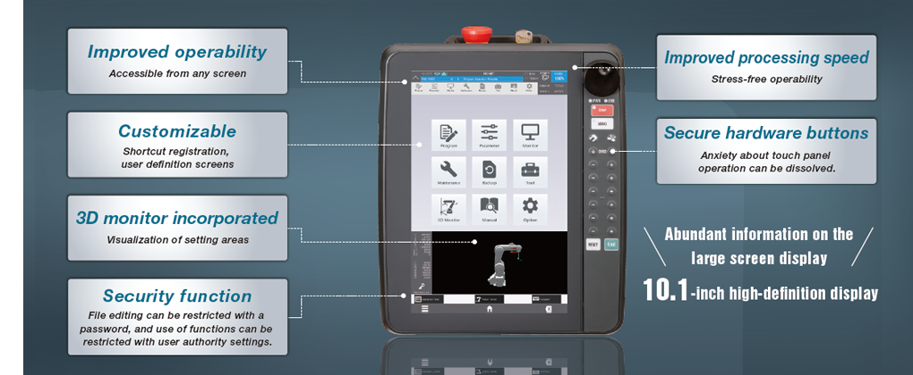
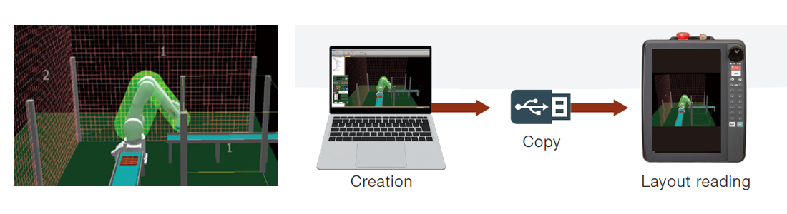

High-performance teaching box R86TB

Fitur

Pengoperasian mudah hanya dengan satu kotak pengajaran ini
- Antarmuka pengguna yang mudah dioperasikan dan intuitif.
- Fungsi yang sering digunakan seperti program dan parameter selalu ditampilkan.
- Fungsi utama perangkat lunak rekayasa disertakan.
- Cara analisis data disediakan untuk pemecahan masalah.
Silakan lihat Katalog untuk rinciannya.
Peningkatan pengoperasian
Peningkatan pengoperasian dengan antarmuka pengguna yang mudah dioperasikan dan intuitif. Anda dapat mengakses setiap fungsi dari layar mana pun.
- Informasi berlimpah pada tampilan layar besar pada definisi tinggi 10,1 inci.
Anda dapat mengurangi waktu untuk beralih layar dan tenaga serta meningkatkan efisiensi kerja. - Layar HOME memiliki ikon fungsi, yang memungkinkan Anda mengakses semua fungsi.
- Dapat disesuaikan. Anda dapat membuat pintasan dan layar operasi Anda sendiri.

"MELSOFT RT ToolBox3" disertakan
Fungsi utama perangkat lunak rekayasa "MELSOFT RT ToolBox3" disertakan.
- Monitor 3D memungkinkan Anda memeriksa pergerakan robot dalam mode 3D dan memvisualisasikan parameter dan area yang ditetapkan.
- Program dapat diedit menggunakan fungsi edit mudah dan templat untuk pengaturan yang lebih efisien.
- Pengaturan logika keselamatan, pemantauan sinyal, variabel, dan kondisi beban, serta lebih banyak fitur dapat digunakan hanya dengan satu kotak pengajaran ini.
- Ruang kerja dan data cadangan dapat digunakan bersama dengan RT ToolBox3 melalui memori USB.

Analisis data
Cara analisis data disediakan untuk pemecahan masalah
- Berbagai jenis tampilan, seperti fungsi osilograf dan monitor (*1), dan layar analisis memungkinkan untuk melakukan diagnosis masalah dan mencapai pemecahan masalah dini tanpa komputer.
- Bahkan ketika komputer tidak dapat dibawa ke lokasi, komputer tersebut memungkinkan untuk menangani serangkaian proses dari penyiapan hingga pemeliharaan, sehingga mengurangi waktu dan biaya.
(*1: Kecuali untuk pengontrol seri CR800-R/Q.)

Pengendali yang Kompatibel
| Pengendali yang Kompatibel | Deskripsi |
|---|---|
| CR800 series | With extension cable, Model: 2F-32EXTBST-☐☐M (☐☐: 01, 05, 10, 15) CR751:Conversion cable required (Conversion cable model: 2F-32CON☐☐M (☐☐: 01, 05, 10, 15) |
| CR700 series |
Katalog terkait
Silakan merujuk ke katalog terkait untuk keterangan lebih lanjut.